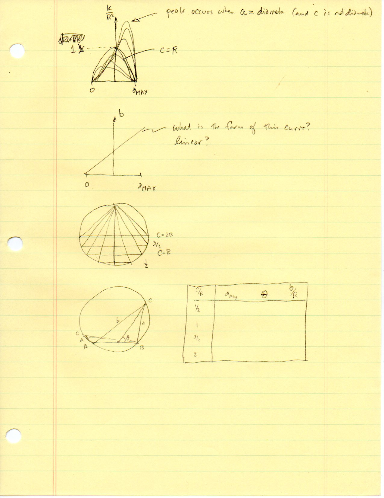
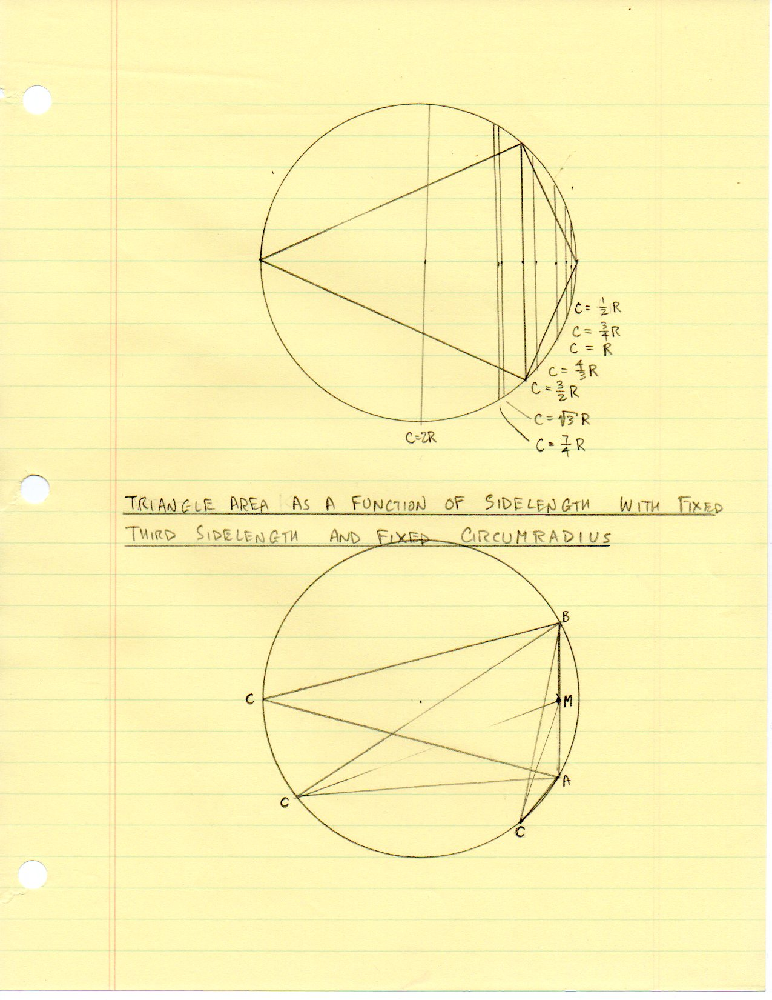
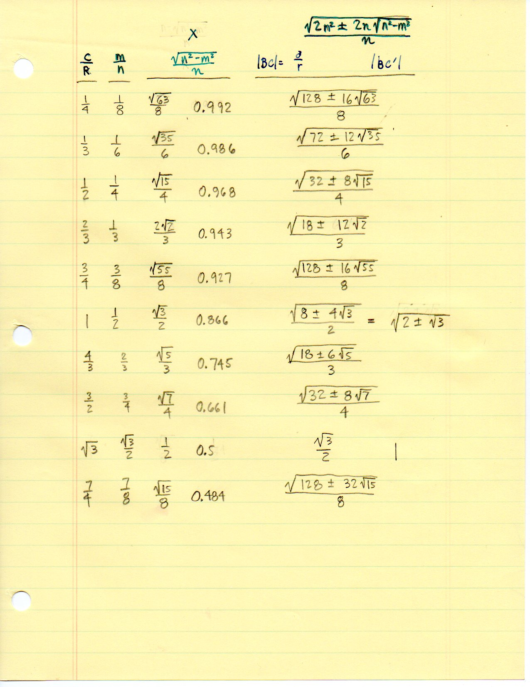
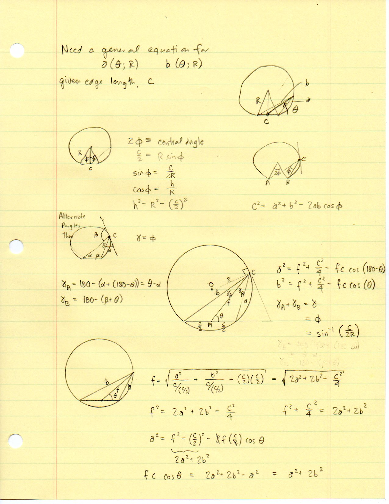
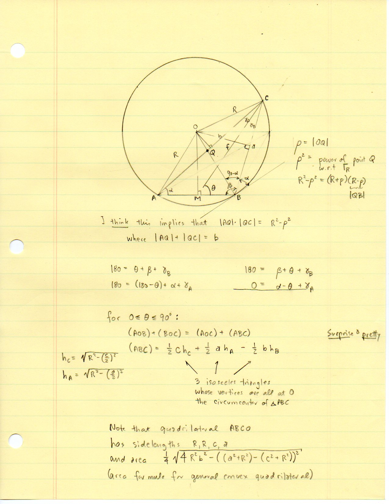
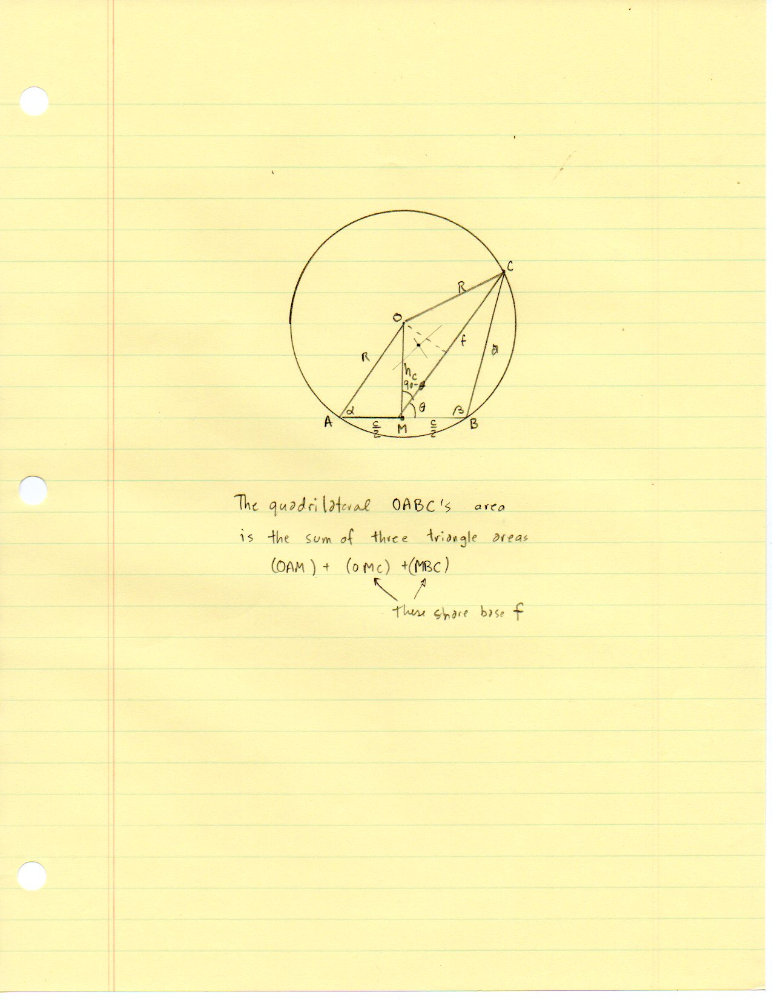
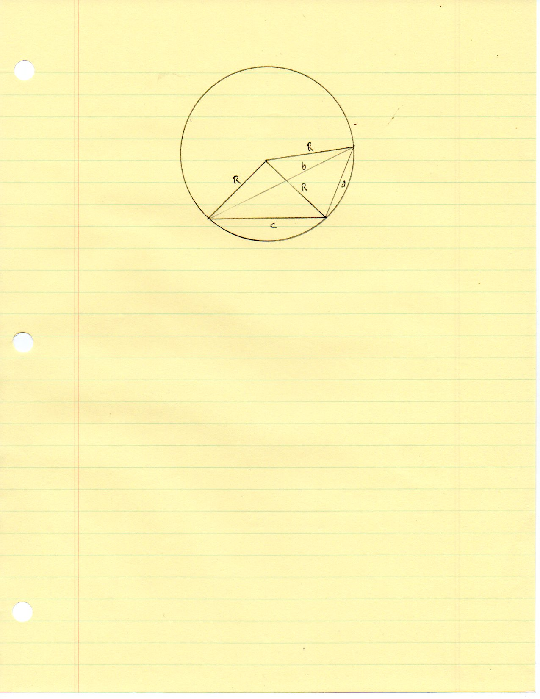

F.13 Compare Triangles in Circles — Folios¶
Archival manuscript scans and diplomatic transcriptions from seelig’s notebooks for F.13 (Compare Triangles in Circles) (SeeligNotebooks).
Folio 0084 (Page 1 of 8): Area K/R^2 vs. Sidelength a Curves¶


Folio 0084 (original scan 0084.jpg) from resources/seelig/13_compare-triangles-in-circles.¶
Diplomatic Mathematical & Geometric Transcription
Diplomatic Transcription — Folio 0084 (0084.jpg, Sheet 1 of 8):
Sketches qualitative plots of normalized area \(K/R^2\) vs. \(a\) (peaking when \(a\) is a diameter) and \(b\) vs. \(a\).
Editorial & Symbolic Notes
Archival scan 0084.jpg from Fred W. Seelig’s notebook dossier on F.13 Compare Triangles in Circles (Page 1 of 8). Companion OpenDocument worksheet(s): Circumcircle Solver, Circumcircle-Circumcenter. Classical Euclidean foundations: III.20, IV.5. Kimberling Encyclopedia of Triangle Centers loci: X(3) — Circumcenter.
Folio 0085 (Page 2 of 8): Compass Construction of Chord Families in Circle of Radius R¶


Folio 0085 (original scan 0085.jpg) from resources/seelig/13_compare-triangles-in-circles.¶
Diplomatic Mathematical & Geometric Transcription
Diplomatic Transcription — Folio 0085 (0085.jpg, Sheet 2 of 8):
Draws vertical chords for \(c/R \in \{1/2, 3/4, 1, 4/3, 3/2, \sqrt{3}, 7/4, 2\}\) and an inscribed triangle \(\triangle ABC\).
Editorial & Symbolic Notes
Archival scan 0085.jpg from Fred W. Seelig’s notebook dossier on F.13 Compare Triangles in Circles (Page 2 of 8). Companion OpenDocument worksheet(s): Circumcircle Solver, Circumcircle-Circumcenter. Classical Euclidean foundations: III.20, IV.5. Kimberling Encyclopedia of Triangle Centers loci: X(3) — Circumcenter.
Folio 0086 (Page 3 of 8): Nested Radical Table for c/R from 1/4 to 7/4¶


Folio 0086 (original scan 0086.jpg) from resources/seelig/13_compare-triangles-in-circles.¶
Diplomatic Mathematical & Geometric Transcription
Diplomatic Transcription — Folio 0086 (0086.jpg, Sheet 3 of 8):
Tabulates \(c/R, m/n = c/(2R), \sqrt{n^2-m^2}/n\), and exact nested radicals for \(|BC|\).
Editorial & Symbolic Notes
Archival scan 0086.jpg from Fred W. Seelig’s notebook dossier on F.13 Compare Triangles in Circles (Page 3 of 8). Companion OpenDocument worksheet(s): Circumcircle Solver, Circumcircle-Circumcenter. Classical Euclidean foundations: III.20, IV.5. Kimberling Encyclopedia of Triangle Centers loci: X(3) — Circumcenter.
Folio 0087 (Page 4 of 8): Equations for a(theta; R) and b(theta; R) via Median f¶


Folio 0087 (original scan 0087.jpg) from resources/seelig/13_compare-triangles-in-circles.¶
Diplomatic Mathematical & Geometric Transcription
Diplomatic Transcription — Folio 0087 (0087.jpg, Sheet 4 of 8):
Uses median \(f = |MC|\) at angle \(\theta\) to \(AB\) to express \(a^2\) and \(b^2\).
Editorial & Symbolic Notes
Archival scan 0087.jpg from Fred W. Seelig’s notebook dossier on F.13 Compare Triangles in Circles (Page 4 of 8). Companion OpenDocument worksheet(s): Circumcircle Solver, Circumcircle-Circumcenter. Classical Euclidean foundations: III.20, IV.5. Kimberling Encyclopedia of Triangle Centers loci: X(3) — Circumcenter.
Folio 0088 (Page 5 of 8): Isosceles Decomposition Around Circumcenter O (‘Surprise & Pretty’)¶


Folio 0088 (original scan 0088.jpg) from resources/seelig/13_compare-triangles-in-circles.¶
Diplomatic Mathematical & Geometric Transcription
Diplomatic Transcription — Folio 0088 (0088.jpg, Sheet 5 of 8):
Proves \((ABC) = \frac{1}{2}ch_c + \frac{1}{2}ah_A - \frac{1}{2}bh_B\) and writes the Bretschneider/Brahmagupta area of quadrilateral \(ABCO\).
Editorial & Symbolic Notes
Archival scan 0088.jpg from Fred W. Seelig’s notebook dossier on F.13 Compare Triangles in Circles (Page 5 of 8). Companion OpenDocument worksheet(s): Circumcircle Solver, Circumcircle-Circumcenter. Classical Euclidean foundations: III.20, IV.5. Kimberling Encyclopedia of Triangle Centers loci: X(3) — Circumcenter.
Folio 0089 (Page 6 of 8): Area as a Function of Angles alpha, beta and R¶

Folio 0089 (original scan 0089.jpg) from resources/seelig/13_compare-triangles-in-circles.¶
Diplomatic Mathematical & Geometric Transcription
Diplomatic Transcription — Folio 0089 (0089.jpg, Sheet 6 of 8):
Poses the question of expressing \(K = (\triangle ABC)\) directly in terms of \(\alpha, \beta, R\).
Editorial & Symbolic Notes
Archival scan 0089.jpg from Fred W. Seelig’s notebook dossier on F.13 Compare Triangles in Circles (Page 6 of 8). Companion OpenDocument worksheet(s): Circumcircle Solver, Circumcircle-Circumcenter. Classical Euclidean foundations: III.20, IV.5. Kimberling Encyclopedia of Triangle Centers loci: X(3) — Circumcenter.
Folio 0090 (Page 7 of 8): Quadrilateral OABC Partitioned by Median f¶


Folio 0090 (original scan 0090.jpg) from resources/seelig/13_compare-triangles-in-circles.¶
Diplomatic Mathematical & Geometric Transcription
Diplomatic Transcription — Folio 0090 (0090.jpg, Sheet 7 of 8):
Decomposes \(OABC\) into \((OAM) + (OMC) + (MBC)\) sharing median base \(f = MC\).
Editorial & Symbolic Notes
Archival scan 0090.jpg from Fred W. Seelig’s notebook dossier on F.13 Compare Triangles in Circles (Page 7 of 8). Companion OpenDocument worksheet(s): Circumcircle Solver, Circumcircle-Circumcenter. Classical Euclidean foundations: III.20, IV.5. Kimberling Encyclopedia of Triangle Centers loci: X(3) — Circumcenter.
Folio 0091 (Page 8 of 8): Clean Compass Construction of Cyclic Quadrilateral ABCO¶


Folio 0091 (original scan 0091.jpg) from resources/seelig/13_compare-triangles-in-circles.¶
Diplomatic Mathematical & Geometric Transcription
Diplomatic Transcription — Folio 0091 (0091.jpg, Sheet 8 of 8):
Draws cyclic quadrilateral \(ABCO\) with three equal sides \(R, R, R\), chords \(c, a\), and diagonal \(b\).
Editorial & Symbolic Notes
Archival scan 0091.jpg from Fred W. Seelig’s notebook dossier on F.13 Compare Triangles in Circles (Page 8 of 8). Companion OpenDocument worksheet(s): Circumcircle Solver, Circumcircle-Circumcenter. Classical Euclidean foundations: III.20, IV.5. Kimberling Encyclopedia of Triangle Centers loci: X(3) — Circumcenter.